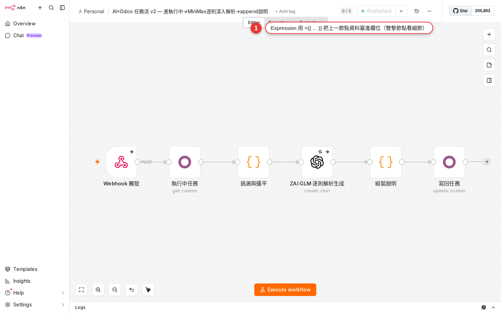

Expression 入門：{{ $json.field }} 從這裡開始
節點欄位（Slack 的 Text、Google Sheet 的 Row Values、Gmail 的 Subject）常常要「把上一個節點抓到的資料填進去」。這件事在 n8n 靠 Expression 完成——一段用 {{ }} 包起來的小 code，執行前 n8n 會把它算成真正的值。這章把最常用的五種寫法、拖拉建 Expression 的姿勢、日期時間跟字串處理、還有紅色 error 怎麼看，一次講完。
為什麼要學 Expression
第 9 章已經告訴你，n8n 節點跟節點之間傳的是一「列」一「列」的 item。但知道 item 長怎樣還不夠——真正下游節點要用的時候，你得把上游的欄位填進下游節點的某個欄位，這中間的橋樑就是 Expression。
舉幾個很日常的例子，沒 Expression 就寫不出來：
- Google Form 有人填了訂單 → Slack 發訊息「新訂單 #1042，客戶 陳小明，金額 $3,500」。粗體那三個要從上游抓，不能寫死。
- 每天早上 08:00 → Gmail 寄「2026-08-16 銷售日報」，日期要今天不是昨天。
- IF 節點條件：「金額 > 1000 才通知主管」，那個 1000 前面要拉到當前 item 的 amount 欄位比較。
- Google Sheet 新增列，姓名欄要填上一個節點的
name，Email 欄要填email。
沒 Expression，你只能對每個客戶各做一個 workflow——那 n8n 就退化成一個很貴的 cron job 而已。Expression 是把「一條 workflow 通用到無限筆資料」的關鍵，也是 n8n 最能幫你省時間的功能，沒有之一。
Expression 就是「動態填空」
先把觀念抓穩：n8n 每個節點裡的欄位（例：Slack 節點的 Text 欄）都有兩種填法。
| 填法 | 你寫的東西 | 執行時發生什麼 | 例子 |
|---|---|---|---|
| Fixed（靜態） | 直接打字，n8n 原封不動送出去。 | 每次跑都是一樣的文字。 | 欄位打 hello world → Slack 就永遠傳 hello world。 |
| Expression（動態） | 用 {{ }} 包起來，裡面寫一小段 JavaScript。 | n8n 執行到這個節點時，先算 {{ }} 裡的結果，再把值填回去。 | 欄位打 {{ $json.name }}，執行時若當前 item 的 name 是 Elmo → Slack 傳的變成 Elmo。 |
切換方式：對著欄位上方的欄位標籤（或欄位本體）會看到一個 Expression／Fixed 的 toggle（新版 UI 顯示為 fx 小圖示與 Expression tab）。左邊 = Fixed 模式、右邊 = Expression 模式。切到 Expression 模式後，欄位背景會變成有格線的 code 欄樣式、還會多出下面的 preview 區塊——這是 Expression 模式的視覺標記，看到格線背景就是進到 code 世界了。
一個欄位還可以「靜態跟 Expression 混著寫」，例：欄位打 新訂單 {{ $json.orderId }}，靜態文字「新訂單 」照樣送，只有 {{ }} 那段會被替換掉。這是模板拼接最直覺的用法。
+、.toUpperCase()、三元運算子 a ? b : c）都能寫。但不建議在裡面跑重邏輯或呼叫 API——那是 Code node（第 20 章）的工作。最常用的五個 Expression 寫法
八成場合都逃不出這五個。先把這五個看熟，之後其他變化都是組合技。
| # | 寫法 | 意思 | 什麼時候用 |
|---|---|---|---|
| 1 | {{ $json.field }} |
當前 item 的某個欄位。 | 90% 的情況——Slack 訊息內容抓當前訂單編號、Gmail 主旨抓客戶姓名、Sheet 新增列填 email。 |
| 2 | {{ $('Google Sheets').item.json.field }} |
抓上游「指定節點」的資料，不管中間隔了幾站。 | 經過 IF、Set、Merge 之後還想回頭抓原始的表單資料。 |
| 3 | {{ $now }} |
現在的時間（Luxon DateTime 物件，含 workflow 時區）。等價於 DateTime.now()。 |
Gmail 主旨加日期、Sheet 新增列填時間戳、跟其他日期做加減。 |
| 4 | {{ $json.items.length }} |
某個陣列的長度。 | Slack 通知「共 {{ $json.orders.length }} 筆訂單」、IF 節點判斷「有沒有超過 10 筆」。 |
| 5 | {{ $json.name.toUpperCase() }} |
對字串呼叫方法（JavaScript String 全套方法都能用）。 | 統一大小寫、截字串、trim 空白、replace 文字。 |
裡面 $json、$now、$() 這些是 n8n 幫你注入的內建變數。它們不是 JavaScript 原生的，是 n8n 自己準備好、你直接用就好。詳細清單在第 20 章會展開，這章先熟這幾個。
$('Google Sheets').item.json.field 是新版寫法（0.190+ 版後主推），同樣的功能舊版寫作 $node['Google Sheets'].json.field。兩種都還能跑（n8n 保留舊寫法向後相容）。要留意兩者的對齊語意：$('Node').item 明確走 pairedItem 對齊當前 iteration；$node['Node'].json 也是抓當前 run 的對應 item，但寫法上少了 .item 那層，行為等價。實務看到別人的 workflow 兩種混用是正常的。拖拉建 Expression（最推薦，不用背語法）
老實說，寫 Expression 幾乎不需要自己打 code——n8n 的 Expression 編輯器有個很好用的「拖拉」機制，欄位名字你都不用記，滑鼠拉一下就變好了。這是所有 n8n 初學者最該學的一招。
-
先讓上游節點跑一次
對上游那個節點按 Execute step（節點下方的小 play 按鈕），讓它產出 output。沒 output 的話 Expression 編輯器不知道有哪些欄位可以拉，會顯示空白 schema。
-
打開你要寫 Expression 的下游節點
雙擊節點打開設定面板。找到你要動的那個欄位（例：Slack 節點的
Text）。 -
把欄位切到 Expression 模式
欄位上方會有 Fixed / Expression 的 tab（或 fx 小圖示），點 Expression 那一邊。欄位背景會變成有格線的 code 樣式，代表切成功了。
-
從左邊 INPUT 面板把欄位拖進去
Expression 編輯器打開後，畫面左邊會滑出「INPUT」panel，列出上游節點所有欄位（可以切 Table / JSON / Schema 三種檢視）。直接把某個欄位拖到 Expression 欄裡，n8n 會自動幫你生出正確的寫法，例：拖
name就變成{{ $json.name }}。 -
看下面的 Result 預覽
Expression 欄下方會有一列 Result:，即時顯示這個 Expression 算出來的值。看到你預期的值就對了；顯示紅字或空的就代表 Expression 有問題。
-
需要混文字就直接打
拖出來的 Expression 前後可以加靜態文字。例：Expression 欄目前是
{{ $json.name }}，你在前面補Hi→ 變成Hi {{ $json.name }}，preview 立刻更新成Hi Elmo。
日期時間：Luxon 上場
n8n 的 Expression 用 Luxon 這個 JS 日期函式庫來處理時間（不是原生 Date，也不是 Moment）。Luxon 的好處是它支援時區、支援日曆算數，語法比原生 Date 簡潔太多。
| 寫法 | 結果 | 什麼時候用 |
|---|---|---|
{{ $now }} | 現在，Luxon DateTime 物件（含時區）。 | 時間戳、Gmail 主旨、記錄「這筆是什麼時候處理的」。 |
{{ $today }} | 今天的日期，時間為 00:00（依 workflow timezone 決定，行為近似 $now.startOf('day')）。 | 只要日期不要時間、篩「今天新增」的資料。 |
{{ $now.plus({ days: 3 }) }} | 三天後的同一時刻。 | 設到期日、算「三天內未回覆就通知」。 |
{{ $now.minus({ hours: 1 }) }} | 一小時前。 | API query 「近一小時新資料」。 |
{{ $now.startOf('day') }} | 今天 00:00:00。 | 抓「今天全部」的起點時間。 |
{{ $now.toFormat('yyyy-MM-dd') }} | 字串 2026-08-16。 | 塞進 Gmail 主旨、檔案名稱、Sheet 欄位。 |
{{ $now.toFormat('yyyy-MM-dd HH:mm') }} | 字串 2026-08-16 14:30。 | 要包含小時分鐘的時間戳。 |
{{ DateTime.fromISO($json.created_at) }} | 把 API 回來的 ISO 字串轉成 Luxon 物件。 | 要對 API 給的日期做加減或格式化。 |
Luxon 的日曆單位（days、hours、months、weeks、years）都能用，複數 s 別漏。toFormat 的 pattern 也是 Luxon 專屬——yyyy 四位年、MM 兩位月、dd 兩位日、HH 24 小時制、mm 分。
Asia/Taipei，之後 $now、$today 就是台北時間。跨時區資料再另外用 .setZone('Asia/Taipei') 明確指定。字串拼接：三種寫法選一種
Slack 訊息、Gmail 主旨、Sheet 欄位都是字串——把上游欄位塞進一段話，n8n 提供三種寫法，你選最順的就好，能達成同樣的事情。
| 寫法 | 結果 | 什麼時候用 |
|---|---|---|
欄位混寫：Hi {{ $json.name }} |
算出 Hi Elmo。 |
最推薦。只要 {{ }} 外面是靜態文字，直接混寫最短。 |
加號拼：{{ 'Hi ' + $json.name }} |
算出 Hi Elmo。 |
要在 {{ }} 裡面組字串（例：整個放進一個 toUpperCase()）時。 |
Template literal（backtick）：{{ `Hi ${$json.name}, 訂單 ${$json.orderId}` }} |
算出 Hi Elmo, 訂單 1042。 |
要在一個 {{ }} 內插多個變數且中間有中英文標點時最乾淨。 |
字串處理常用方法（都是 JavaScript String 標準方法）：
| 寫法 | 做什麼 | 例子 |
|---|---|---|
.toUpperCase() | 全大寫。 | {{ $json.code.toUpperCase() }} → ABC123 |
.toLowerCase() | 全小寫。 | {{ $json.email.toLowerCase() }} |
.trim() | 去頭尾空白。 | 從 Google Form 拿到 " Elmo " 用它清乾淨。 |
.slice(0, 100) | 截前 100 字。 | Slack 訊息預覽避免爆掉：{{ $json.body.slice(0, 100) }} |
.replace('舊', '新') | 取代。 | {{ $json.phone.replace(/-/g, '') }}（去掉所有 -） |
.split(',') | 切成陣列。 | 把 a,b,c 變成 ['a','b','c']。 |
{{ $json.name?.toUpperCase() }}。加個 ?，name 不存在就回 undefined 不噴錯，比 if 判斷精簡很多。常見場景直接抄
把你會遇到的常見 use case 跟對應寫法列成一張表——把 workflow 打開，欄位切 Expression 模式，直接照抄就能跑。

| 場景 | Expression 寫法 | 解釋 |
|---|---|---|
| Slack 訊息模板：新訂單通知 | {{ `新訂單 #${$json.orderId}｜客戶 ${$json.customer}｜金額 $${$json.amount}` }} |
用 template literal 一次組完，中文分隔符照打。 |
| Google Sheet 新列，姓名欄 | {{ $('Webhook').item.json.name }} |
指定回頭抓 Webhook 那個節點的 name，就算中間插 Set 也不會斷。 |
| Gmail 主旨動態日期 | {{ '銷售日報 - ' + $now.toFormat('yyyy-MM-dd') }} |
Fixed 文字加 Luxon 格式化，跑起來變 銷售日報 - 2026-08-16。 |
| IF 節點條件：金額大於 1000 | 左邊值 {{ $json.amount }}，operator 選 >，右邊值 1000 |
IF 節點不吃 raw boolean——operator 一定要用它 UI 選；左右兩格才是 Expression 欄。要組合條件請用多個 condition + AND/OR，或前面接一個 Set 節點先算好 boolean 再用 IF 判斷。 |
| HTTP Request URL 動態 | https://api.example.com/orders/{{ $json.orderId }} |
URL 也支援 Expression 混寫，把 orderId 塞進 path。 |
| Airtable 上傳，把 tags 陣列轉字串 | {{ $json.tags.join(', ') }} |
Airtable 有些欄位只吃字串，用 join 把陣列變逗號分隔。 |
| 檔案命名帶時間戳 | {{ 'report_' + $now.toFormat('yyyyMMdd_HHmm') + '.pdf' }} |
結果 report_20260816_1430.pdf，避免同名覆蓋。 |
| 三元運算子：有值用值、沒值用預設 | {{ $json.nickname ? $json.nickname : $json.name }} |
暱稱優先，沒暱稱回退到本名。也可寫更短的 {{ $json.nickname || $json.name }}。 |
紅色 error 怎麼看
Expression 欄位噴紅字或欄位邊框變紅，不用慌——n8n 已經在 Expression 面板下方直接告訴你原因，看懂它給的訊息就能修。以下四種是最常見的紅字類型跟解法。
-
Result 顯示
undefined最常見。原因通常是欄位名打錯——例：真實欄位叫
name，你打$json.namee多一個 e。修法：切 INPUT 面板到 Schema 檢視，確認真實欄位名怎麼寫（大小寫、有沒有空格、是不是data.name這種巢狀）。用拖拉的就不會打錯。 -
Result 顯示
[Cannot read property 'X' of undefined]你要抓的東西它的父層根本沒東西。例：
$json.customer.email，但customer這個欄位不存在，n8n 讀不到email就噴這個。解法：（a）用 optional chaining$json.customer?.email避開；（b）先修上游節點，確認它真的有回傳customer。 -
Result 顯示
[Referenced node doesn't exist]你用
$('Google Sheets')或$node['Google Sheets']，但畫布上根本沒有叫「Google Sheets」的節點——通常是節點名稱被改過（雙擊節點會改名），或大小寫、空格對不上。修法：回畫布看那個節點實際叫什麼名字（連空格都要精確），複製過來替換。 -
Result 顯示 schema 而非實際值
Preview 只顯示欄位結構、沒實際值？代表該上游節點還沒跑過——n8n 不知道實際會抓到什麼。解法：對上游節點按一次 Execute step，讓它產出真的 output，回來 Result 就會有實際值了。
進階：$json、$node、$input 到底差在哪
看到別人的 workflow 三種寫法混用會混亂，但邏輯很簡單——它們的差別是「拿的是誰的資料」跟「拿的是一個 item 還是全部」。
| 變數 | 指的是 | 什麼時候用 |
|---|---|---|
$json |
當前這一輪 iteration 的那個 item 的 json 部分。 |
90% 場合。節點被連跑 N 次，每次 $json 指不同 item。 |
$binary |
當前 item 的 binary 部分（有附件才有）。 | 處理檔案時：$binary.attachment_0.fileName。 |
$input.item |
當前 item 完整物件（包含 json 跟 binary）。 |
Code node 或需要一次取 json 跟 binary 時。 |
$input.all() |
當前節點吃到的全部 items 陣列（每個元素含 .json 跟 .binary）。 |
要對整批做 aggregation（$input.all().length、$input.all().map(i => i.json.amount).reduce(...)），在 Expression 跟 Code node（第 20 章）都能用。 |
$input.first() / $input.last() |
當前節點吃到的第一個 / 最後一個 item。 | 取批次頭尾做 summary（例：報表節點只需要開始時間 $input.first().json.startedAt）。 |
$('NodeName') |
上游任一節點（不限直接上游）的 output。 | 抓兩三站前的原始資料。新寫法。 |
$node['NodeName'] |
同上，舊寫法。 | 看舊 workflow 或 template 會遇到，功能一樣。 |
$now / $today |
現在時間 / 今天 00:00（Luxon DateTime，含 workflow timezone）。 | 日期時間相關全部用它。也可寫 DateTime.now() 拿到同型別物件。 |
$itemIndex |
當前 iteration 這個 item 在本節點輸入陣列裡的索引（從 0 開始）。 | 第一筆做開場、每 10 筆加分隔、要在訊息裡帶「第 N 筆」時：{{ $itemIndex + 1 }}。 |
$workflow |
當前 workflow 的資料（.id、.name、.active）。 |
錯誤通知裡放 workflow 名字方便追蹤。 |
$execution |
當前這次執行的資料（.id、.mode、.resumeUrl）。 |
錯誤訊息裡加 execution id 好回查；Wait 節點恢復也靠 .resumeUrl。 |
$vars / $env |
Workflow / Environment 變數（Cloud 全版；self-host Enterprise 才有 $vars；$env 需開 N8N_BLOCK_ENV_ACCESS_IN_NODE=false）。 |
把 API endpoint、閾值集中管理，不用每個 workflow 改寫。 |
$('NodeName').first()、$('NodeName').last()、$('NodeName').all() 是三個常用的取法：first/last 拿頭尾一個 item、all 拿整份陣列。$('NodeName').item 是取「跟當前 iteration 對應的那個 item」（靠 pairedItem 對齊，第 9 章講過）。
常見卡關
-
Expression 沒被解讀，Slack 傳出去的訊息就是
{{ $json.name }}這串文字你忘了打開欄位的 fx toggle。Fixed 模式下
{{ }}只是普通文字，不會被算成值。回節點打開那個欄位，右上角切成 Expression 模式（背景會變深色）再重存一次。 -
Result 顯示
undefined三個可能：（a）欄位名打錯——切 Schema 檢視對一下真實欄位名，用拖拉最保險；（b）上游節點回傳的欄位就是沒有那個——去上游節點的 output 面板看實際 JSON；（c）大小寫不對——
Name跟name是兩個東西。 -
拿不到上游節點：
Referenced node doesn't exist節點名字打錯了。
$('Google Sheets')裡面的名字要跟畫布上顯示的完全一樣——連空格、大小寫、括號都要對。最保險是回畫布把節點名 copy 過來貼上，別自己打。 -
日期跑掉時區
$now.toFormat('yyyy-MM-dd HH:mm')顯示 UTC 時間不是台北時間？去 workflow 右上角 Settings → Timezone 設Asia/Taipei，之後$now、$today都會以台北時間為準。已經是 UTC 的資料要轉，用.setZone('Asia/Taipei')明確指定。 -
Preview 是舊值，跟實際跑出來不一樣
Expression preview 用的是上游節點上一次跑的 output——如果你改了上游的參數還沒重跑，preview 就是舊值。對上游按 Execute step 讓它產生新 output，再回來看 preview。
-
Expression 拿陣列的
.length卻回undefined那個欄位不是陣列。切 Schema 檢視確認它的型別——如果 API 回傳的是「看起來像 array 但其實是 string」（例：
"[1,2,3]"），要先JSON.parse($json.list)轉成真陣列才能.length。
常見問題
Expression 有完整的語法規範嗎？
function／const／let、不能 await、不能 require 外部套件、也不能寫 if / for 陳述句。日期時間走 Luxon（不是 Moment、不是原生 Date），可用 $now、$today、或全域 DateTime 建立物件（例：DateTime.now()、DateTime.fromISO(...)）。詳細參考官方文件 docs.n8n.io/code/expressions/ 跟 docs.n8n.io/code/builtin/。可以在 Expression 裡寫 for loop、if 嗎？
a ? b : c 沒問題，短 || 判斷（$json.x || 'default'）也行。但真的要跑 for loop、多層 if、複雜資料轉換，不建議塞 Expression——會變得超難讀跟 debug。這時候換 Code node（第 20 章），用完整 JavaScript 或 Python 寫，還有 syntax highlight。Expression 適合「一行內能講完」的動態值，Code node 適合「有邏輯要跑」的處理。Expression 執行會慢嗎？
怎麼查有哪些內建函數／變數可以用？
$ 開頭變數（$json、$now、$workflow...）跟 Luxon 常用方法。點某個名字還會顯示它的說明跟一段範例。找不到的話直接查官方文件 docs.n8n.io/code/builtin/，那邊有完整清單。Luxon 的日期方法查 moment.github.io/luxon/。$json.field 跟 $('上一節點').item.json.field 差在哪？
$json 是「不管上游是誰，就是我剛吃到的資料」；$('NodeName') 是「指定去那個節點抓」。當 workflow 有分支、Merge、Set 節點插在中間，$('NodeName') 讓你直接跳過中間站抓最原始的資料，不會被中間節點改掉的欄位坑到。新手先用 $json，workflow 複雜之後自然會用 $('NodeName')。要把 Expression 存成常數重複用可以嗎？
const x = ...）。想重複用同一個算式有兩種做法：（a）用 Set 節點先把它算出來存成一個欄位，下游全部節點都用 $('Set').item.json.myVar 抓；（b）用 workflow-level Variables（Cloud 有、self-host Enterprise 有），在 Settings 定義後全 workflow 用 $vars.myVar 讀。實務上 (a) Set 節點的做法對新手最直接。看到別人 workflow 寫 $node['Foo'].json.bar，我可以改成 $('Foo').item.json.bar 嗎？
$node[]，同時推新寫法 $('NodeName')。新專案建議用新的（短、也是官方文件主推），舊 workflow 不用特別改。混用不會壞，只是看起來風格不一。第 6 章教改 template 時就常會遇到舊寫法，看得懂就好。